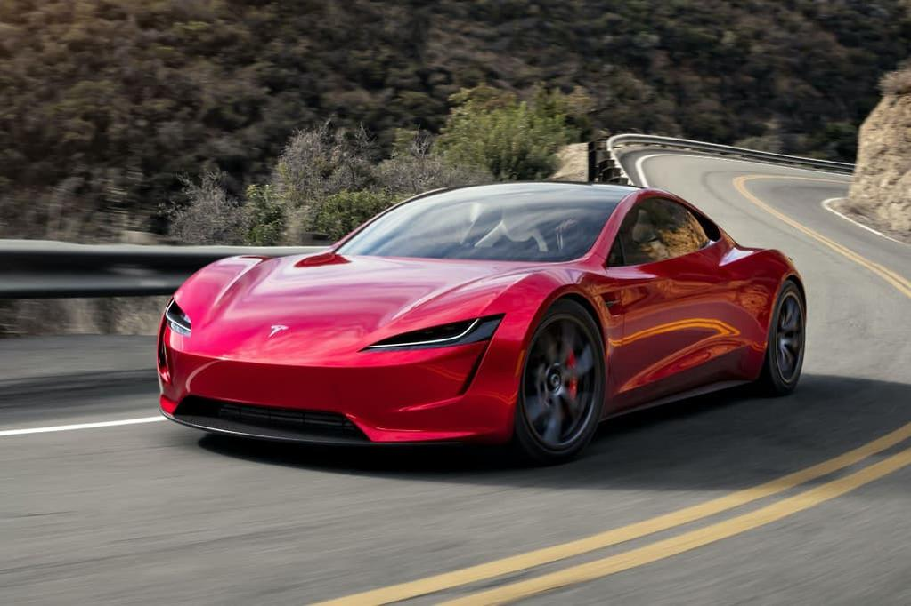
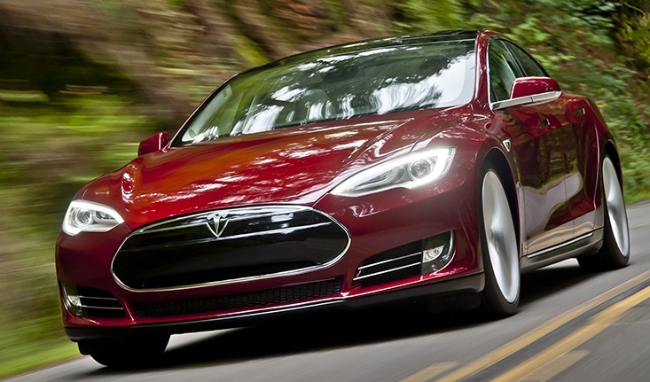
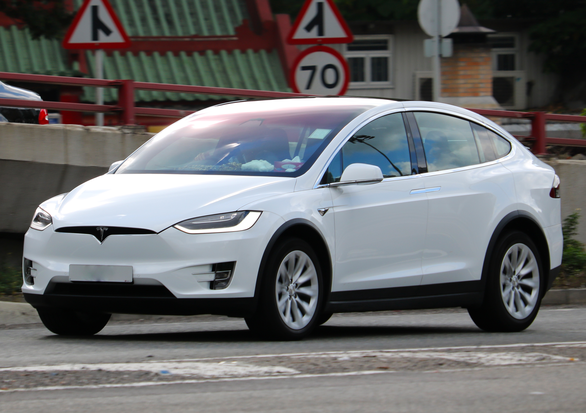
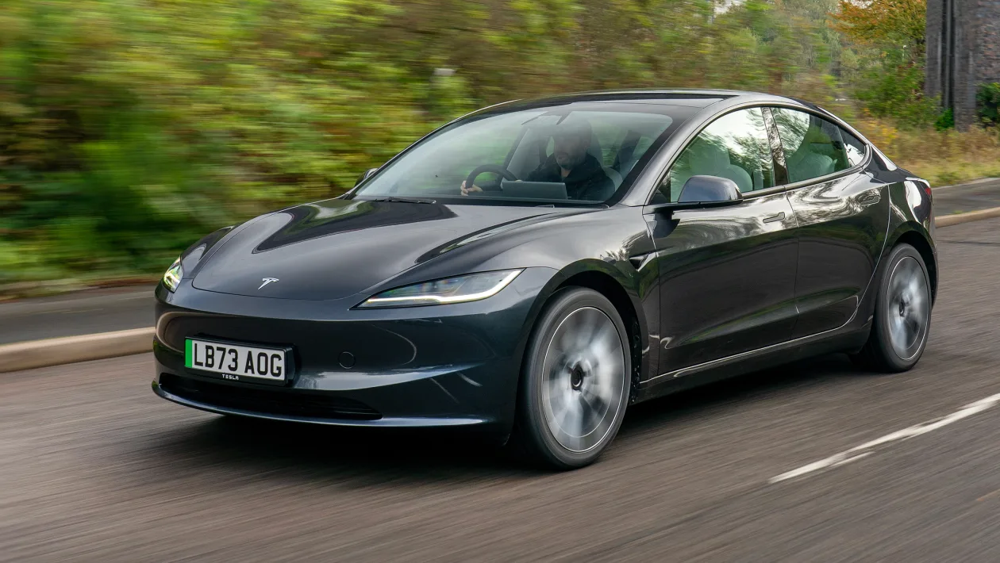
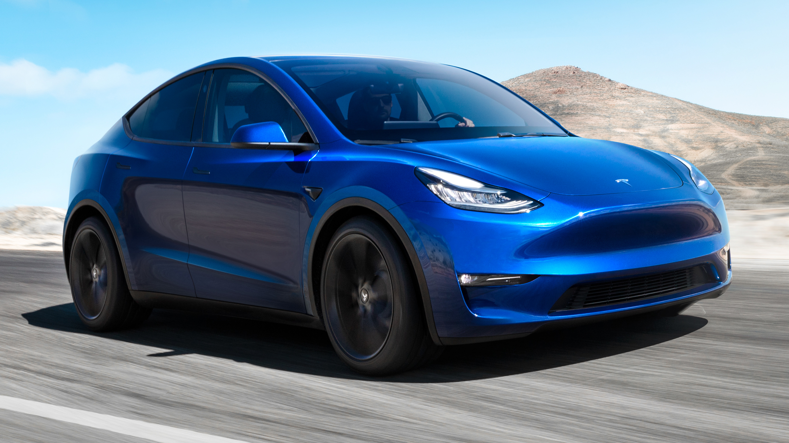
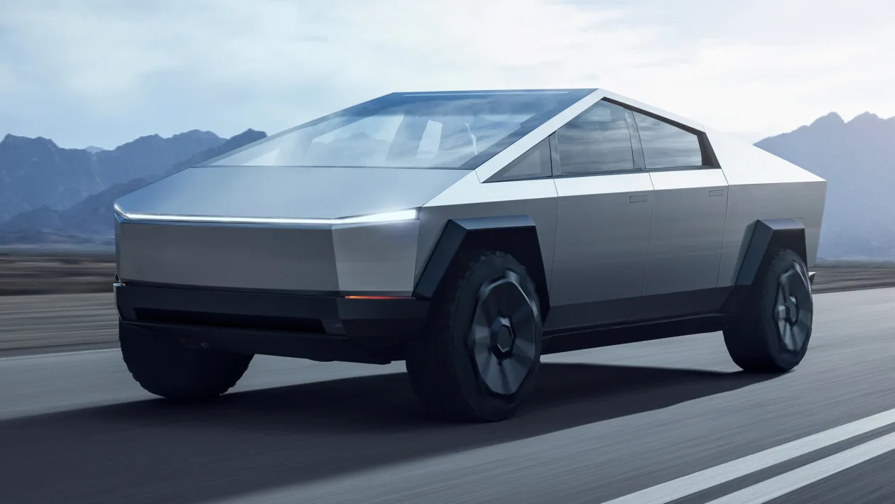
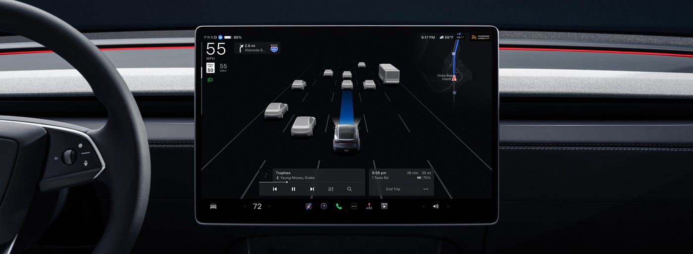
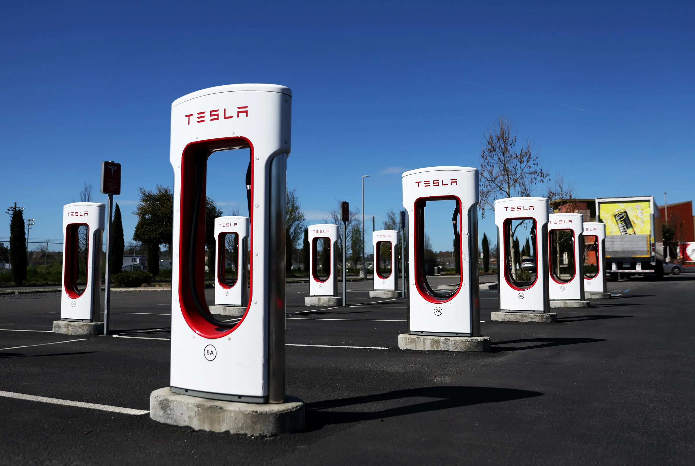
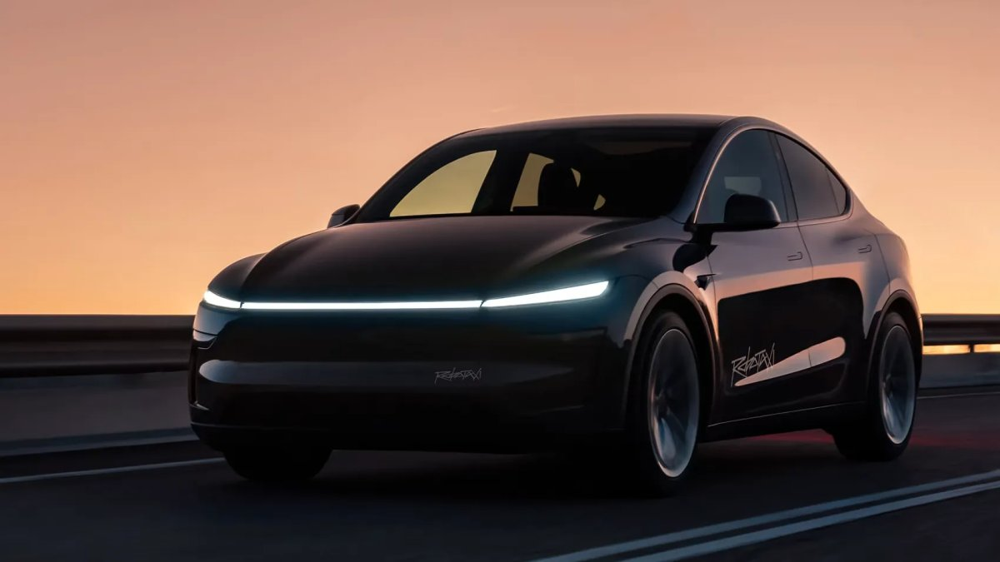

Tesla
Accelerating the World's Transition to Sustainable Energy
Founded: 2003
Country: USA
Icon: Model S
EV Revolution
Accelerating the World's Transition to Sustainable Energy
Tesla's story is the most remarkable in modern automotive history. In less than two decades, a Silicon Valley startup transformed the global auto industry and forced every manufacturer to take electric vehicles seriously.
The company was founded in 2003 by Martin Eberhard and Marc Tarpenning, named after inventor Nikola Tesla. They wanted to prove that electric cars could be better than gasoline cars – not just eco-friendly compromises.
Elon Musk joined in 2004 as chairman, leading the first investment round. He became CEO in 2008 and is the public face of Tesla, though not a founder. Musk's vision and relentless drive have been crucial to Tesla's success.
The first Tesla, the 2008 Roadster, was based on the Lotus Elise chassis but fitted with a revolutionary battery pack using thousands of laptop-style lithium-ion cells. It proved EVs could be fast (0-60 in 3.7 seconds) and have decent range (244 miles).
The 2012 Model S changed everything. It was a ground-up electric luxury sedan with stunning design, 265-mile range (later over 400), and a giant 17-inch touchscreen. It won every car of the year award and showed the world what an EV could be.
Tesla faced "production hell" with the Model X (2015) and especially the Model 3 (2017). The Model 3 was supposed to be the affordable Tesla, but production delays nearly bankrupted the company. Musk slept at the factory, and they eventually solved the problems.
Today, Tesla is the world's most valuable automaker, with factories in the US, China, and Europe. The Model Y is one of the best-selling vehicles globally. Tesla has proven that EVs can be desirable, profitable, and mainstream.
"If something is important enough, you should try, even if the probable outcome is failure."- Elon Musk

2008-2012
The first Tesla. Based on Lotus Elise chassis, it proved EVs could be fast and desirable. Only about 2,500 built.

2012-present
The car that changed everything. Luxury sedan with massive range, insane performance, and over-the-air updates. Plaid version does 0-60 in 1.99 seconds.

2015-present
The falcon-wing SUV. Distinctive rear doors, spacious interior, and incredible performance. The fastest SUV in the world (Plaid).

2017-present
The affordable Tesla. Smaller, simpler, but still fast and efficient. Became the best-selling EV in history and one of the best-selling cars globally.

2020-present
The compact SUV based on Model 3. More practical, more space, same performance. Now Tesla's best-seller.

2023-present
The polarizing pickup. Stainless steel exoskeleton, armored glass, and futuristic design. Over 1 million reservations.

2022-present
Electric semi truck. 500-mile range, megawatt charging, and lower operating costs than diesel. In production for customers like Pepsi.

Announced
The next-generation Roadster promises 0-60 in under 1 second, 620-mile range, and rocket thrusters. The ultimate Tesla.
Tesla pioneered the use of thousands of small cylindrical cells (18650, then 2170, now 4680) with advanced thermal management. The 4680 cells offer 5x energy, 6x power, and reduce cost by 14%.
Tesla cars improve over time. New features, performance increases, and even safety improvements are downloaded wirelessly – like a smartphone.
Three electric motors, carbon-sleeved rotors, and advanced thermal management. The Model S Plaid has 1,020 hp and is the fastest production sedan.
Up to 350 kW charging, adding 200 miles in 15 minutes. The Supercharger network is the largest fast-charging network globally, with over 50,000 stalls.
The battery pack becomes part of the car's structure, saving weight and improving rigidity. Used in Model Y and Cybertruck.
Massive aluminum die-casting machines that produce large single-piece castings, replacing dozens of stamped parts and reducing complexity.
Tesla's approach to autonomy is different from others. While most companies use lidar and detailed maps, Tesla relies on cameras and neural networks – "Tesla Vision."
FSD Beta has been testing with customers since 2020. It can navigate complex city streets, stop at traffic lights and stop signs, make turns, and roundabouts. It's not fully autonomous – driver must supervise – but it's the most advanced production system.
Tesla also uses its massive fleet of cars to collect data, training neural networks on millions of miles of real-world driving. This data advantage is significant.

One of Tesla's biggest advantages is its Supercharger network. Started in 2012, it now has over 50,000 stalls globally, with plans to expand rapidly.
Tesla has opened its network to other EVs in many regions, becoming a standard. The North American Charging Standard (NACS) connector is being adopted by Ford, GM, Rivian, and others.
Superchargers are strategically located along travel routes, with amenities nearby. The network eliminates range anxiety for long-distance travel.

Tesla's goal is a dedicated robotaxi vehicle without steering wheel or pedals, operating as an autonomous taxi network. Unveiled in 2024, production unknown.
More versions of the polarizing pickup, including a potential smaller model for Europe.
The next-generation Roadster promises 0-60 in under 1 second – the quickest production car ever. SpaceX option includes cold air thrusters.
Expanding production of the electric semi truck, with more customers and potentially a consumer version.
Tesla's humanoid robot, using the same AI and sensors as the cars. Long-term vision for labor automation.
Tesla's solar, Powerwall, and Megapack businesses are growing rapidly, potentially as big as automotive.
